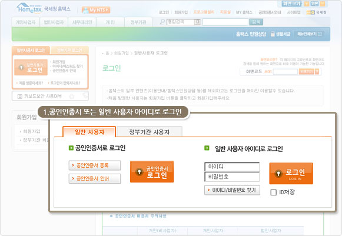
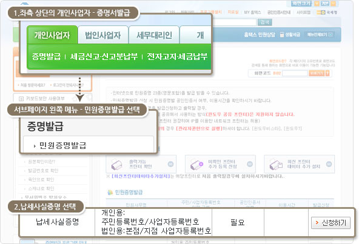
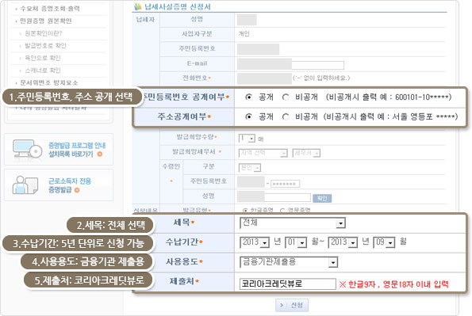
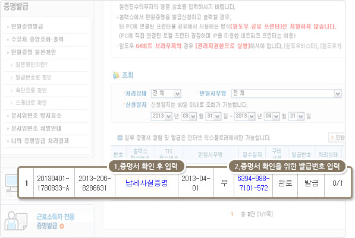

증명서 발급방법 안내

1 국세청 홈텍스 홈페이지 접속 및 로그인

2 로그인
- 1.공인인증서 또는 일반 사용자 아이디로 로그인

3 납세사실 증명서 선택
- 1. 좌측 상단의 개인사업자 - 증명서 발급 민원증명서 선택
- 2. 납세사실증명 선택

4 납세사실증명 발급 신청서 작성
- 1. 주민등록번호, 주소 공개 선택
- 2. 세목 : 전체 선택
- 3. 수납기간 : 5년 단위로 신청 가능
- 4. 사용용도 : 금융기관 제출
- 5. 제출처 : 코리아크레딧뷰로
- 6. 신청보튼 누르기

5 납세사실 증명서 및 발급번호를 확인합니다.
- 1. 증명서 확인 후 발급번호를 입력합니다.
